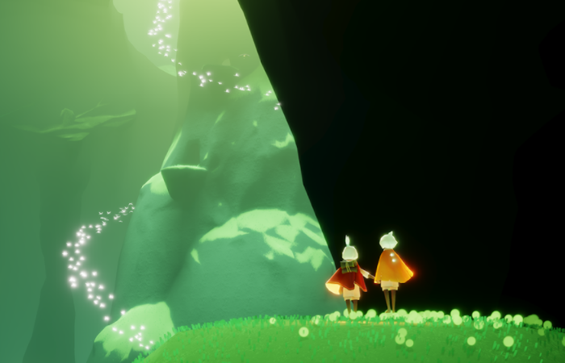
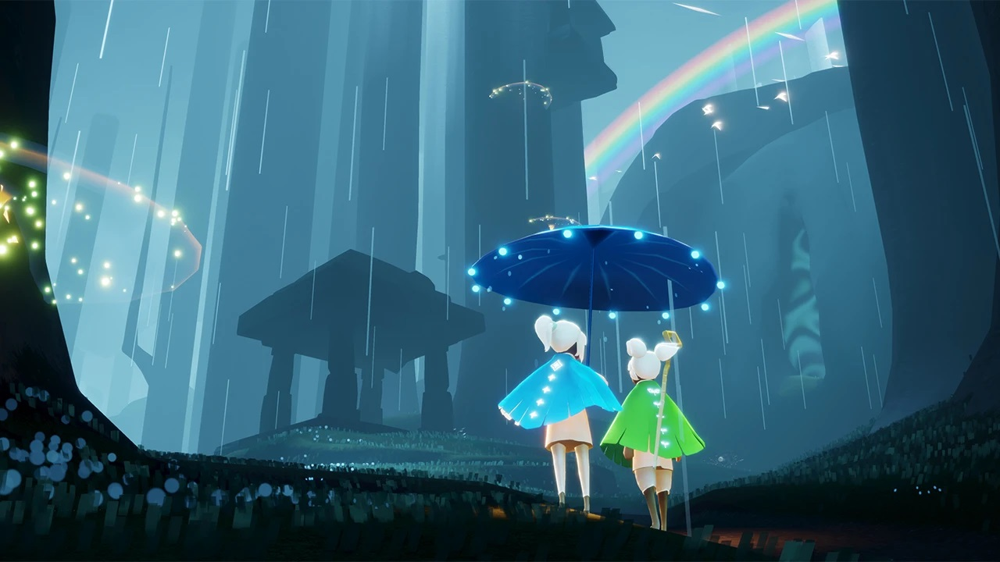

Sky: Children of the Light
Một trò chơi phiêu lưu độc lập xã hội mạng được phát triển và phát hành bởi Thatgamecompany.

Giới thiệu
Trong Sky: Children of the Light, người chơi khám phá một "vương quốc phép thuật" bằng cách dùng áo choàng để bay. Có bảy cõi để tham quan, mỗi cõi mang theo mỗi chủ đề xoay quanh từng giai đoạn của cuộc đời. Ngoài các cõi này, còn khu vực Home là trung tâm đi lại giữa các cõi.
Suốt hành trình, người chơi bắt gặp những "linh hồn" (spirit) mang đến vật phẩm để đổi lấy tiền tệ là nến trong trò chơi. Người chơi có thể tìm thấy những ngôi sao bị mất mang lại "ánh sáng có cánh", thu thập nhiều ánh sáng đồng nghĩa với việc nâng cấp cánh, giúp người chơi bay cao và xa hơn.
Trò chơi tập trung vào xã hội, người chơi quốc tế được phân theo ngẫu nhiên. Người chơi có thể gặp gỡ và kết bạn với người chơi khác để mở khóa các khả năng như trò chuyện và gửi quà tặng cho nhau. Ngoài ra còn có nhiều mặt hàng có thể thay đổi gồm áo choàng, mặt nạ, kiểu tóc, mũ, quần, nhạc cụ và biểu cảm. Những vật phẩm này có thể thu được bằng cách dùng tiền tệ trong trò chơi.
Lối chơi
TSky: Children of the Light vẫn xoay quanh việc khám phá môi trường thế giới xung quanh nhưng giờ đã rộng lớn và đa dạng hơn rất nhiều. Nhân vật của người chơi vẫn có cho mình khả năng bay lượn. Những linh hồn trong game mỗi khi được khám phá sẽ cho các emotion, giúp người chơi thể hiện cảm xúc qua các hành động, hay thu thập những Star/Winged Light để tăng khả năng bay cũng như khả năng chống chịu.
Nhắc đến khả năng chống chịu, nó là ngọn lửa, là ánh sáng của nhân vật. Ngọn lửa ấy có thể bị dập khi người chơi đi dưới mưa, bị phân tán bởi môi trường xung quanh hoặc mất đi khi bị tấn công bởi sinh vật trong game. Đến một lúc nào đó, bạn sẽ mất màu và bị rơi mất Star, nếu Star bị rơi ấy không được nhặt lại kịp lúc thì nó sẽ bị tan biến.
Giống như Journey, game cũng đem lại những trải nghiệm thú vị với người chơi khác thông qua hệ thống giao tiếp có một không hai. Giờ đây chúng ta không chỉ gặp một người chơi khác, mà trong một khu vực, chúng ta có thể bắt gặp 2-3 người chơi thậm chí lên đến 8 người trong cùng một khu vực. Bạn có thế đang trượt một mình trên hồ băng, bỗng nhiên từ xa xuất hiện hai người chơi khác, nắm tay nhau và khiêu vũ, hay khi ngọn lửa của bạn vụt tắt khi đi dưới mưa, một người nào đó chạy đến chìa ra một cây nến giúp thắp lại ánh sáng cho bạn.
Giao tiếp với người chơi khác giờ đây trở nên dễ dàng hơn nhờ các emotion cực kì đáng yêu thu thập được trên chuyến hành trình, thậm chí chúng ta còn có thể chat được với người khác với một số điều kiện nhất định. Người chơi có thể kết bạn với nhau bằng cách trao cho nhau những ngọn nến, để cùng khám phá, phiêu lưu cùng nhau. Ngoài những điều kể trên, còn có một số những tính năng thú vị khác như thay đổi trang phục, chơi nhạc cụ,…
Bạn có thể tham khảo thêm thông tin tại đây.
Tải game
Hiện chỉ có thể tải game qua các nền tảng: Android, iOS, Nintendo Switch.
Thông tin thêm
| Nhà phát triển | Thatgamecompany. |
| Nhà phát hành | Thatgamecompany, NetEase (Trung Quốc). |
| Nền tảng | Android, iOS, Nintendo Switch. |
| Chế độ | Nhiều người chơi. |
| Thể loại | Phiêu lưu, Indie. |